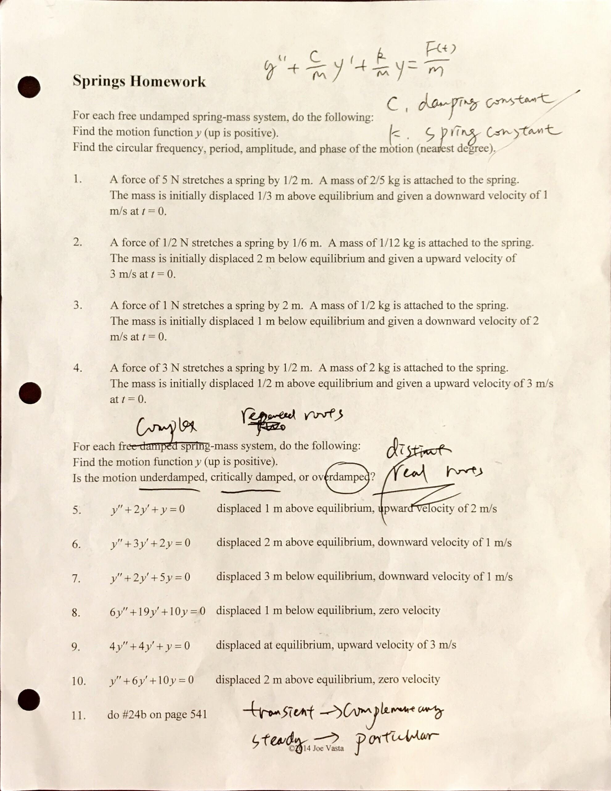
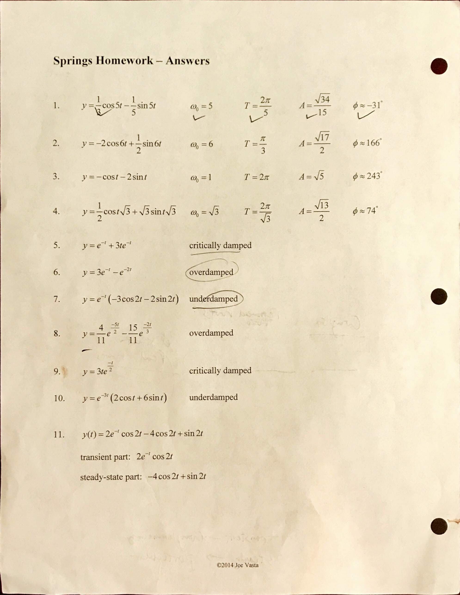
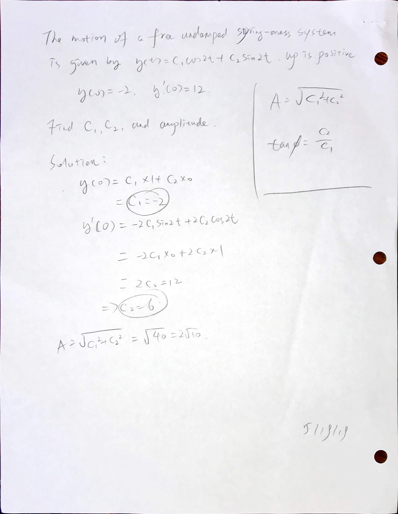
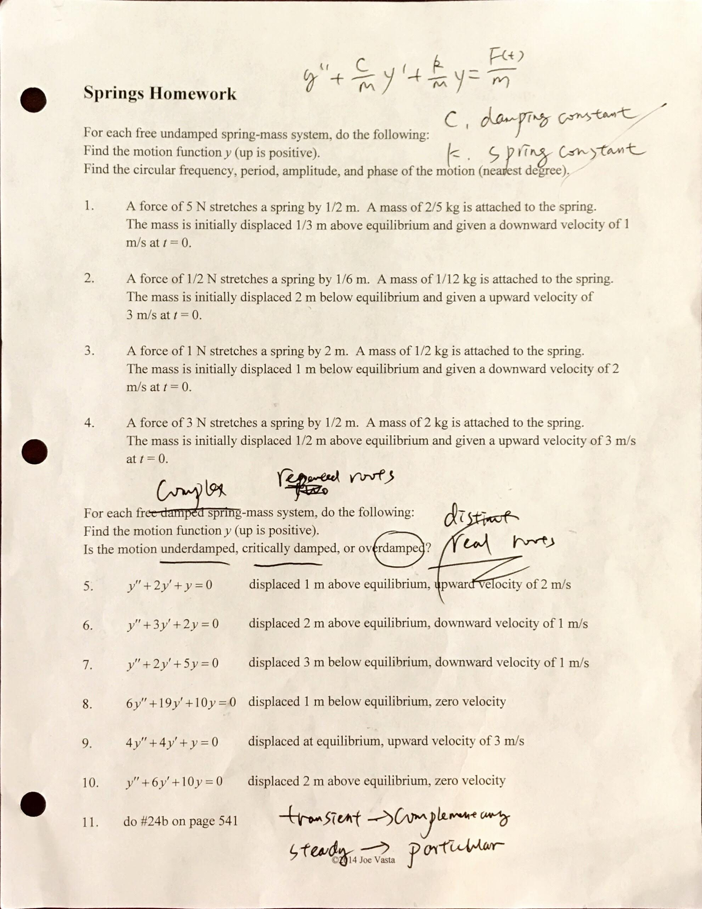
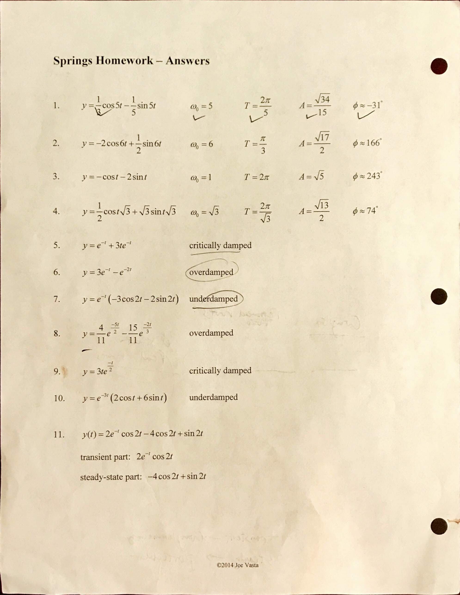
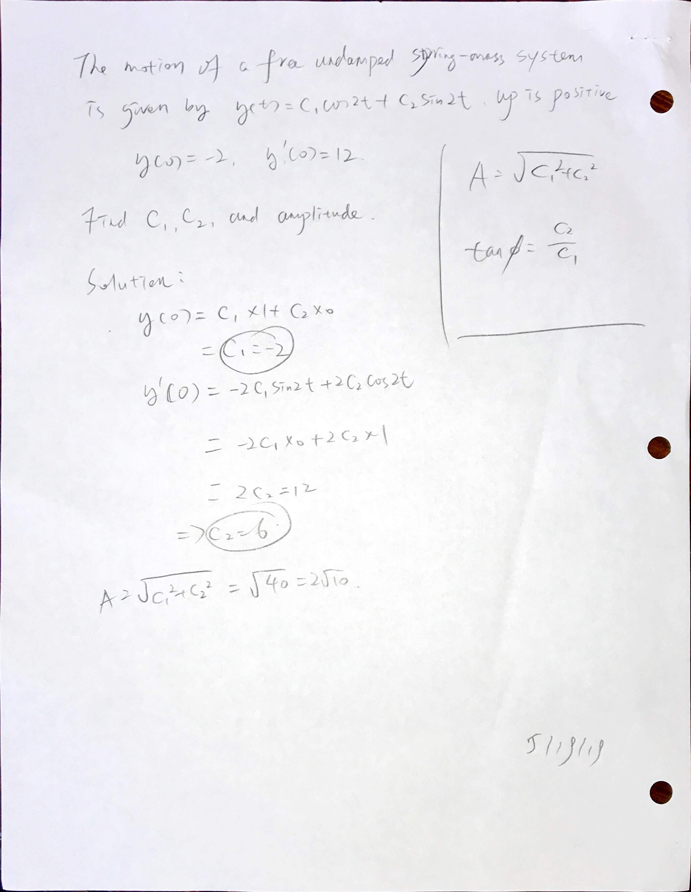

0805 Springs
- - Displacement. ( - acceleration, - velocity)
- - Damping constant (in undamped condition, )
- - Spring constant
- - Mass of object
Angular Frequency -
Period -
Homework
8.5 handout 1-11 all



Angular Frequency -
Period -
8.5 handout 1-11 all


